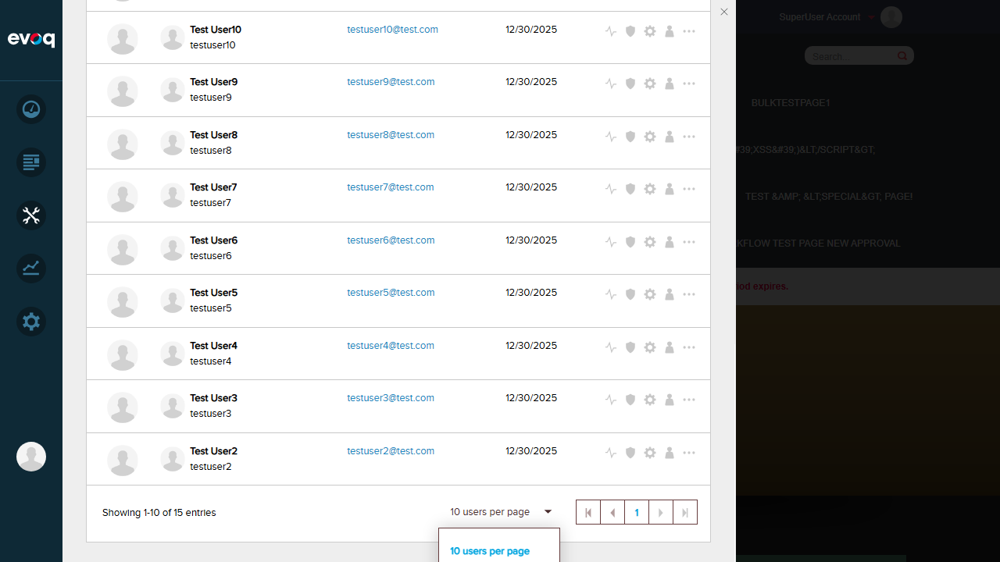
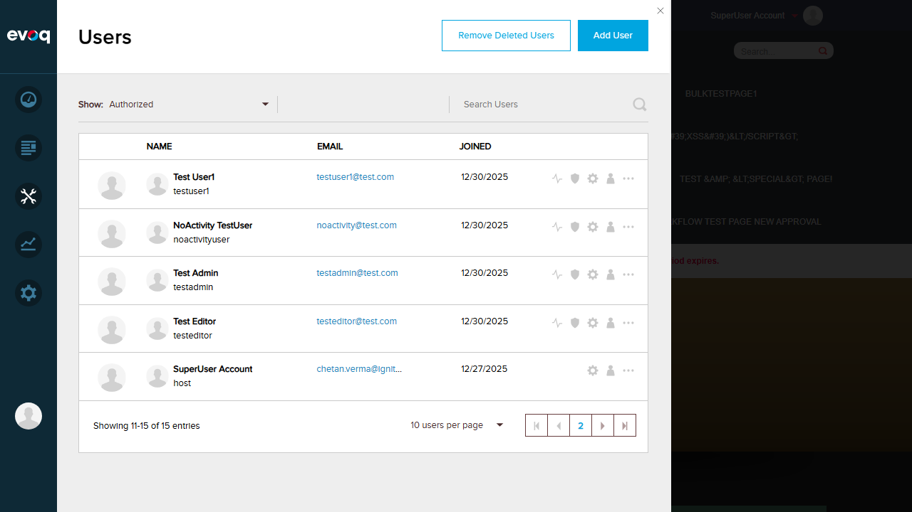
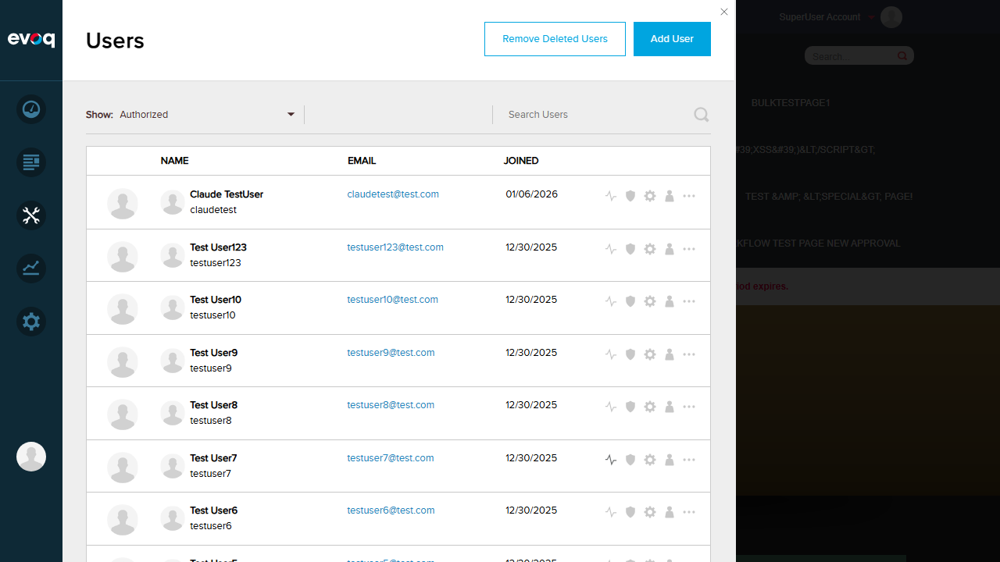
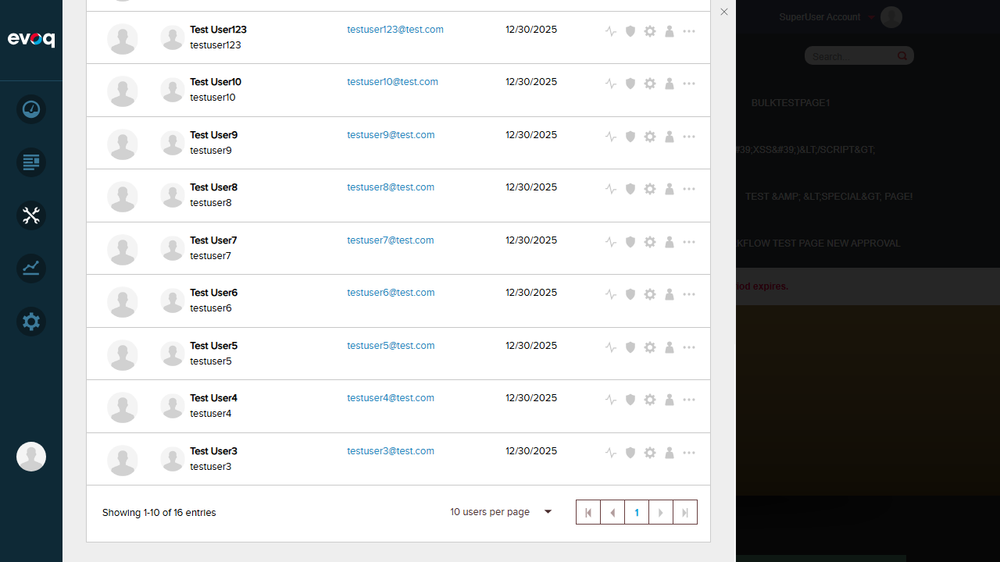
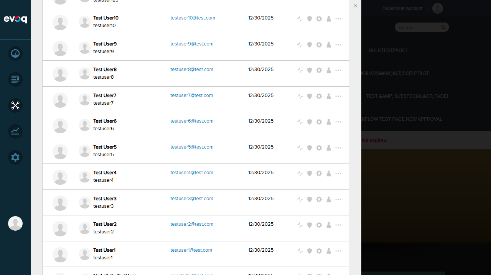
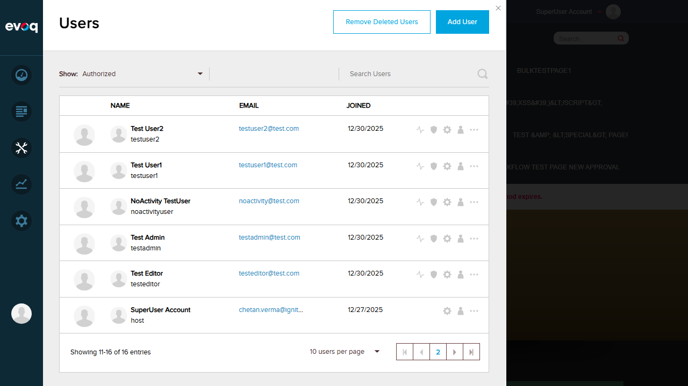

User List Pagination - Test Report
Feature Information
Extension: Evoq.PersonaBar.Users
Feature: User List Pagination
Description: Navigate through paginated list of users with configurable page sizes
UI Location: Admin > Users > Pagination Controls
Test Date: January 6, 2026
Testing Depth: THOROUGH (High Priority)
Test Summary
| Test Scenario |
Status |
| Default page size is 10 |
PASS |
| Navigate to next page |
PASS |
| Navigate to previous page |
PASS |
| Test first/last page boundaries |
PASS |
| Change page size (10, 25) |
PASS |
| Verify total users count display |
PASS |
| Verify current page indicator |
PASS |
| Pagination resets on filter change |
FAIL |
Test Scenarios
Test 1: Default Page Size is 10 PASS
Objective: Verify the default page size is 10 users per page
Steps:
- Navigate to Admin > Manage > Users
- Open the page size dropdown to see available options
- Verify the default selected option is "10 users per page"
- Count the number of users displayed in the list
Expected Result: Default page size should be 10, and 10 users should be displayed
Actual Result: Default page size is "10 users per page" and exactly 10 users are displayed


Test 2: Navigate to Next Page PASS
Objective: Verify clicking the next page button navigates to the next page
Steps:
- Start on page 1 showing "Showing 1-10 of 16 entries"
- Click the next page button (right arrow)
- Verify page indicator updates to page 2
- Verify entry count updates to show remaining entries
Expected Result: Page should advance to page 2 showing entries 11-16
Actual Result: Page successfully navigated to page 2, showing "Showing 11-16 of 16 entries"

Test 3: Navigate to Previous Page PASS
Objective: Verify clicking the previous page button navigates back
Steps:
- Start on page 2 showing "Showing 11-16 of 16 entries"
- Click the previous page button (left arrow)
- Verify page indicator updates to page 1
- Verify entry count shows first 10 entries
Expected Result: Page should go back to page 1 showing entries 1-10
Actual Result: Page successfully navigated back to page 1, showing "Showing 1-10 of 16 entries"

Test 4: First/Last Page Boundaries PASS
Objective: Verify first and last page navigation buttons work correctly
Steps:
- From page 1, click the "Last Page" button (double right arrow)
- Verify navigation to the last page
- Click the "First Page" button (double left arrow)
- Verify navigation back to page 1
Expected Result: Should be able to jump directly to first and last pages
Actual Result: Last page button navigated to page 2 (showing 11-16), First page button returned to page 1 (showing 1-10)


Test 5: Change Page Size (10, 25) PASS
Objective: Verify page size can be changed and affects the display
Steps:
- Open the page size dropdown
- Select "25 users per page"
- Verify the list updates to show up to 25 users
- Verify pagination summary updates accordingly
Expected Result: Page size should change to 25 and all 16 users should display on one page
Actual Result: Page size changed to 25, showing "Showing 1-16 of 16 entries" (all users on one page)

Test 6: Verify Total Users Count Display PASS
Objective: Verify the total user count is displayed correctly in pagination
Steps:
- Navigate to Users page
- Observe the pagination summary text
- Verify format shows "Showing X-Y of Z entries"
Expected Result: Should display total count in format "Showing X-Y of Z entries"
Actual Result: Total count correctly displayed as "16 entries" throughout testing
Test 7: Verify Current Page Indicator PASS
Objective: Verify the current page number is clearly indicated
Steps:
- Navigate through different pages
- Observe the page indicator in the pagination controls
- Verify current page is highlighted/visible
Expected Result: Current page number should be clearly visible in pagination controls
Actual Result: Current page number is displayed and highlighted (e.g., "1" or "2" shown between navigation arrows)
Test 8: Pagination Resets on Filter Change FAIL
Objective: Verify pagination resets to page 1 when a filter is changed
Steps:
- Navigate to page 2 (showing entries 11-16)
- Change the filter from "Authorized" to "All"
- Verify pagination resets to page 1
- Verify entry count shows "Showing 1-10 of X entries"
Expected Result: After filter change, pagination should reset to page 1 with "Showing 1-10 of X entries"
Actual Result: Filter changed successfully, but pagination indicator did NOT reset. Shows "Showing 11-16 of 16 entries" with page "2" highlighted, even though the data appears to be page 1 content (starting with Claude TestUser).
Bug Found: Pagination indicator does not synchronize with the data when filter changes. The code sets pageIndex = 0 and resetIndex = true on filter change, but the Pager component's visual indicator does not update to reflect the reset. This creates a mismatch between displayed data (page 1) and pagination indicator (page 2).
Location: src/Modules/Evoq.PersonaBar.Users/EvoqUsers.Web/src/components/Body/index.jsx (onFilterChange method)
Potential Cause: The resetIndex prop is set to true and then immediately set back to false in the setState callback, which may not give the Pager component enough time to react to the reset signal.
Before Filter Change (Page 2):

After Filter Change (Bug - Still Shows Page 2):
Observations
- Page Size Options Limited: The UI only offers page sizes of 10 and 25. The test scenarios suggested testing 50 and 100, but these options are not available in the current implementation.
- Jump to Specific Page: The pagination does not provide numbered page buttons for direct navigation. Users can only use first/previous/next/last navigation. A "Jump to page" feature mentioned in test scenarios does not exist in the UI.
- Empty User List: Could not test empty user list scenario without removing all users, which would affect other functionality.
- Single Page of Users: With 16 users and default page size of 10, there are always 2 pages. Testing single-page scenario would require fewer users or larger page size (25 shows all on one page).
- Code Verification: Reviewed the source code at
src/Modules/Evoq.PersonaBar.Users/EvoqUsers.Web/src/components/Body/index.jsx:
- Default pageSize confirmed as 10 (line 30)
- Uses
Pager component from @dnnsoftware/dnn-react-common
- Filter change handler sets
pageIndex = 0 and resetIndex = true but the reset doesn't work correctly
Test Environment
- Website URL: http://localhost:8081
- Browser: Chromium (via Playwright)
- Viewport: 1280x720
- User: SuperUser Account (host)
- Total Users in System: 16
Conclusion
Overall Result: 7 PASS, 1 FAIL
The User List Pagination feature is mostly functional with core navigation working correctly.
However, a significant bug was found where the pagination indicator does not reset when filters are changed,
creating a visual mismatch between the displayed data and the pagination controls.
This should be addressed to ensure consistent user experience.